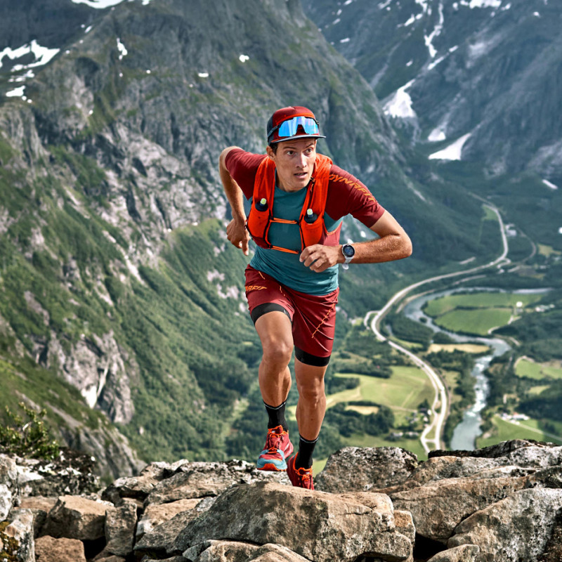
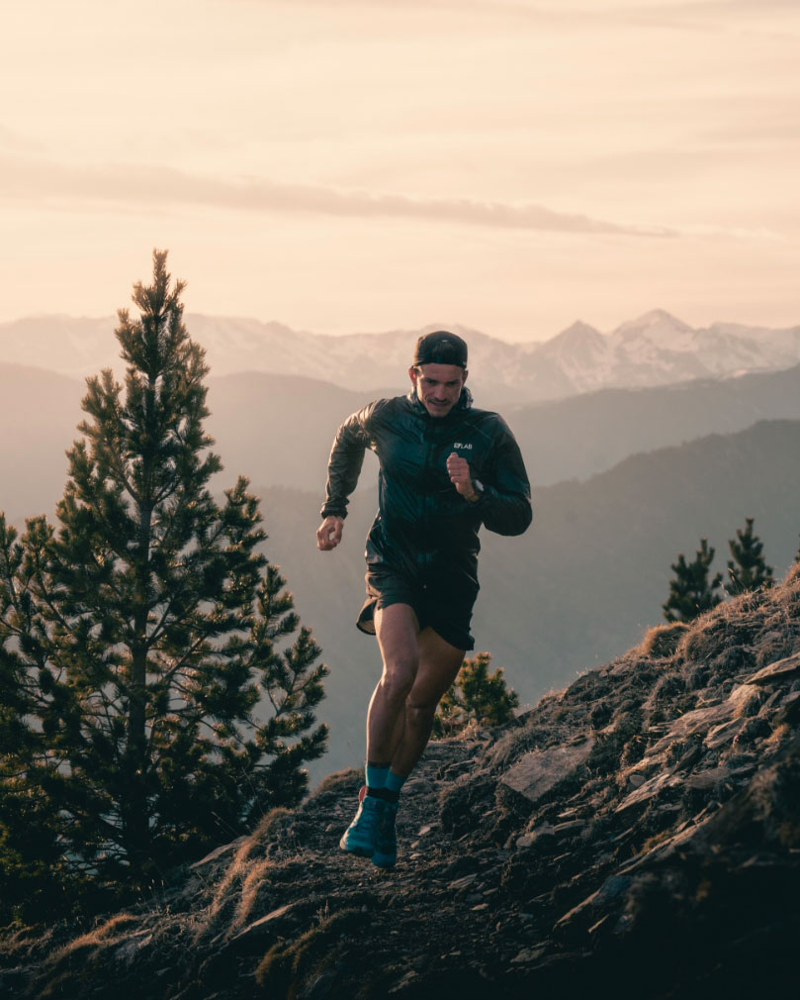
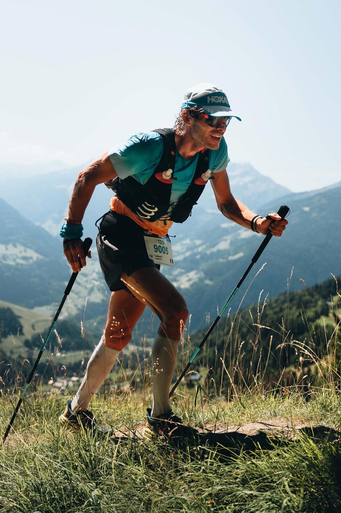

L'ultra-trail est bien plus qu'une simple course à pied. C'est une aventure humaine qui repousse les limites de l'endurance, une communion profonde avec la nature et un défi personnel sans pareil. Ces courses, qui se déroulent sur des distances supérieures au marathon et s'aventurent souvent dans des terrains accidentés, offrent aux coureurs une expérience unique où chaque pas est une victoire.

Les origines de l'ultra-trail remontent à des épreuves d'endurance ancestrales, où les hommes et les femmes parcouraient de vastes distances pour des raisons de survie ou de tradition. Cependant, c'est dans les années 1970 que l'ultra-trail moderne a véritablement vu le jour, avec des courses emblématiques comme la Western States 100 Miles Endurance Run aux États-Unis. Au fil des décennies, l'ultra-trail a gagné en popularité, attirant des athlètes de tous horizons. Les parcours se sont diversifiés, allant des montagnes escarpées aux forêts luxuriantes, en passant par des déserts arides. De nouvelles courses ont émergé chaque année, offrant aux coureurs un choix toujours plus vaste de défis.

L'ultra-trail n'a cessé d'évoluer, tant sur le plan sportif que culturel. Aujourd'hui, les coureurs sont de mieux en mieux équipés, grâce aux progrès technologiques en matière de chaussures, de vêtements et d'appareils de suivi. La nutrition sportive a également connu des avancées significatives, permettant aux athlètes de tenir la distance dans des conditions extrêmes. Parallèlement, l'ultra-trail est devenu un vecteur de développement durable et de protection de l'environnement. De nombreuses courses mettent en place des initiatives pour réduire leur impact écologique et sensibiliser les participants aux enjeux environnementaux.